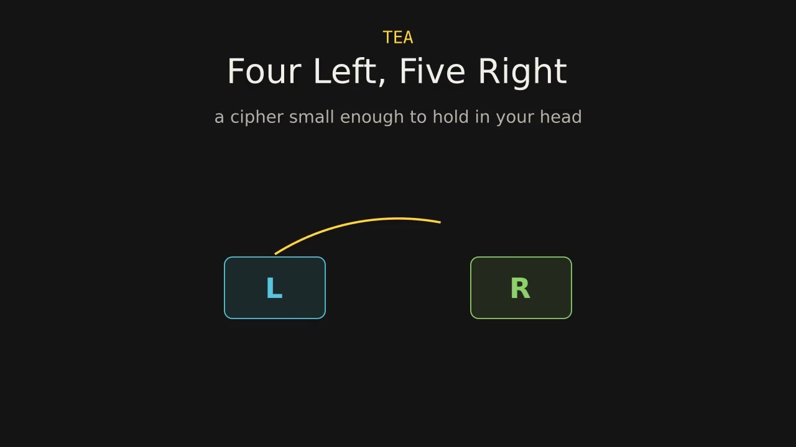
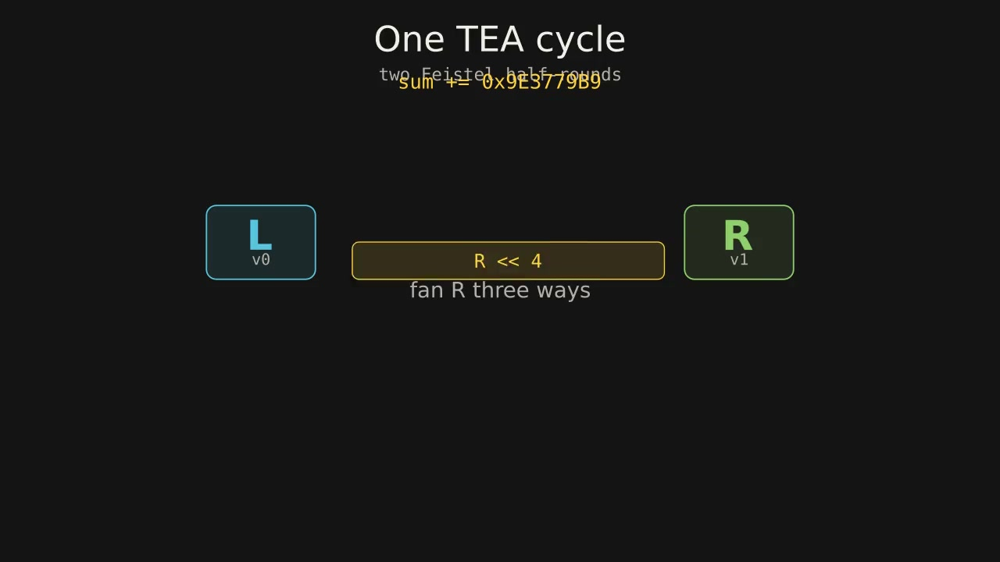

an algorithm I just learned
Four Left, Five Right
A tiny cipher, watched one shift at a time — and the reason a key can have siblings.
I ran into this cipher in CTFs on pwn.college’s reversing-hell · babyc module, and it stuck with me. TEA is small enough that you can watch every bit move — so I wanted a page that does exactly that.
David Wheeler and Roger Needham published the Tiny Encryption Algorithm in 1994. The whole thing fits on a note card: a block is two 32-bit words, a key is four, and each cycle takes the right word, fans it three ways, slides those copies out of line, folds in a piece of the key, and adds the mix into the left. Then the halves swap jobs. Thirty-two cycles. (Some people count each half as its own Feistel round and call it sixty-four. Same loop.)
The slide is what I keep coming back to. Four bits toward the high end, five toward the low. The copies almost overlap and never quite do — so when you XOR them, a bit has to argue with neighbors that used to sit a few places away. That misalignment is the design. No S-boxes. No fancy key schedule. Just a constant called delta, added into a running sum so the cycles aren’t copies of each other. Delta is 232 divided by the golden ratio, rounded down: 9E3779B9. Not a secret. Just a metronome.
The animations below are Manim walkthroughs of that shape. Under them, the bit theater lets you scrub the same loop yourself.


The stir
These four words never change. Only the sum does. That is the whole key schedule.
Every cycle
Flip one bit and watch what happens. At first it’s a single scar. A few cycles later it covers about half the 64-bit block, then wanders around that half — which is what “mixed” actually looks like. The loop runs thirty-two times because two or three cycles aren’t a stir yet.
One flipped bit · live
Same key, same block, one bit of the left word flipped. The bars are how many bits disagree after each cycle. The dashed line is half of them.
Then the part that disappointed me. The key never moves. Every cycle just adds the same four words in the same places. Addition is a soft way to hide a secret — nudge one ingredient up and another down, and the sum doesn’t care which pair you started with.
TEA has a real version of that failure. Each key has three siblings: other 128-bit keys that encrypt every block the same way. There’s a related-key attack too, where queries under a related key help take the cipher apart. I’m not going to show either construction. The figure under this is a toy — ordinary integers, one addition — the shape of the mistake, not a recipe for finding a TEA key. XTEA exists because this key schedule was too innocent.
I still like the original. It’s the smallest thing I’ve watched that feels both beautiful and not quite enough — which is probably why babyc put it in front of me in the first place.
Sibling ingredients
Not the cipher. Not its key relation. One sum, and two pairs that produce it.
5 and 3. The sum is 8.